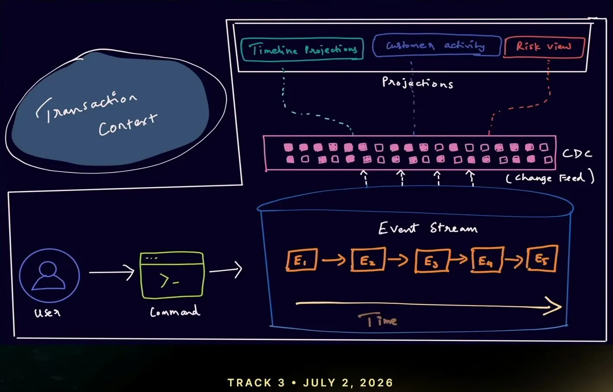
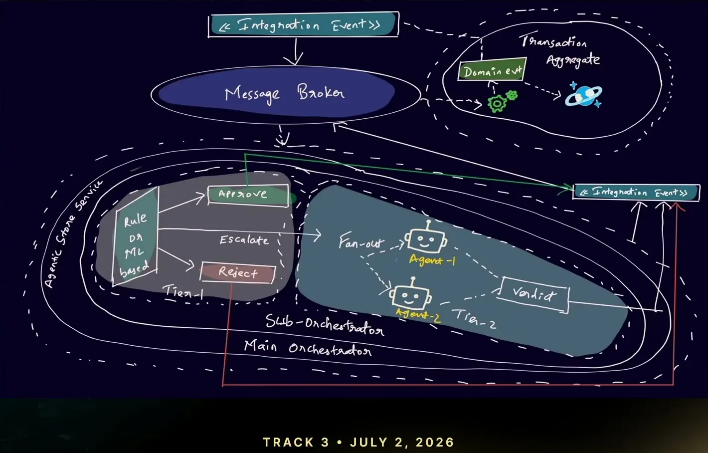
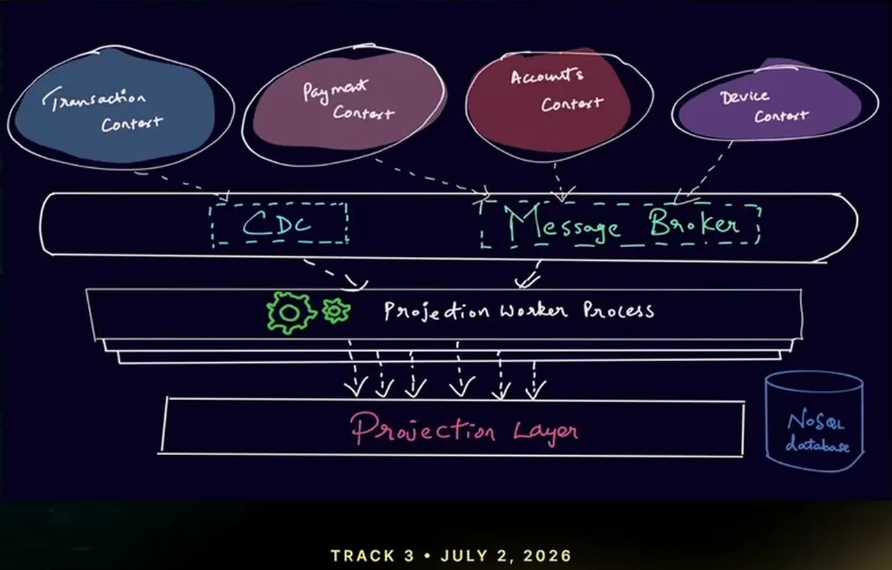

Let's Integrate AI Agents in Event-Sourced Systems
If you only read one thing
- A two-tier fraud architecture keeps the existing rule-based/ML engine for most transactions and routes only gray-zone cases to a tier-two layer of fan-out agents.
- Two specialist agents (risk analyzer, behavior analyzer) each reach a conclusion, and a third verdict agent reconciles their responses instead of relying on raw metrics, which cut false positives.
- Agents pull context from a CDC-fed materialized semantic layer built across four bounded contexts (transaction, account, device, payment), using short-term in-memory storage to hit a sub-500ms SLA.
The rule-based engine and later the third-party ML model could confidently approve or block transactions above and below certain thresholds, but a meaningful share of transactions fall into a gray zone where neither system can reach a clear verdict. The team's response was not to replace the existing tier-one system but to add a tier-two agentic layer that only engages for that gray zone.
“majority of the transaction like few of the transaction like goes under the gray zone area and this is the area where it is really uncertain for those systems to really come to a conclusion”
▶ watch at 04:00“most of the cases would be handled really well by these existing system we already had because our thought process is not to exclude the systems that we already had”
▶ watch at 04:45
The domain is split into transaction, account, device, and payment bounded contexts that don't share data directly, following event sourcing with Cosmos DB as the event store. A CDC/change-feed mechanism propagates changes into read models, and a worker process aggregates all four contexts into a materialized semantic layer that agents query as tools.
“we have a kind of a mechanism called CDC or in no sequel word this is called as a change feed with which like whenever there is a change or update happens over a table, so you will be getting notified”
▶ watch at 09:30“we need to gather all the data from all these different contexts and to have or build a semantic layer or you could call it as a materialized view which you could further use within your agent”
▶ watch at 10:30
Inside the orchestration layer's tier-two sub-orchestrator, an event fans out to a risk analyzer agent and a behavior analyzer agent, each equipped with tools against the semantic layer (fraud history, device trust, business rules, transaction-pattern plugins). A third verdict agent reconciles both responses into a final decision rather than relying purely on a metric threshold, because pure-metric verdicts reproduced the same false-positive problem as the old rule-based system.
“we are trying to use a fan out pattern like um once the uh event has been reached out to the uh tier two layer, we will be fanning out this um event to two different agents”
▶ watch at 13:48“if we are using just the metrics, it is again going back to the same criteria like where we had this rule-based um mechanism. Uh so, there are many false positive cases that we are that we faced”
▶ watch at 14:30
Because transactions must be processed in sub-500ms, the agent layer uses short-term, in-memory storage rather than long-term memory, and the team enforces an explicit stopping metric on the agent's reasoning loop to avoid runaway iteration.
“for for the transaction uh to be processed like it should be sub 500 milliseconds. And you we are currently using in-memory for this”
▶ watch at 11:54“you should really know like when to stop this loop uh because uh this this depends uh this this is this might be varying”
▶ watch at 12:36
Commentary (ours)
The gray-zone-only routing pattern is a pragmatic way to introduce non-deterministic agents into a latency- and audit-sensitive path without disturbing what already works; the open question the talk doesn't address is how the verdict agent's own decisions get audited or explained to a customer, which was the exact gap in the anecdote that opened the talk.
Underlying detail — every claim, typed and timestamped (8)
| Stance | Claim | t |
|---|---|---|
| asserts | A meaningful share of transactions fall into a gray zone where existing rule-based and ML systems can't reach a confident verdict. | 04:00 |
| recommends | Keep the existing rule-based/ML tier-one system in place and add a tier-two agentic layer only for the gray-zone cases. | 04:45 |
| asserts | The team uses Cosmos DB as an event store, appending events rather than mutating state, and uses change feed/CDC to propagate updates into read models. | 09:30 |
| recommends | Gather data from all bounded contexts into a materialized semantic layer that agents can use as their source of context. | 10:30 |
| asserts | The tier-two layer fans an event out to a risk analyzer agent and a behavior analyzer agent, then a third verdict agent reconciles their responses. | 13:48 |
| warns | Relying on a raw metric for the verdict reproduced the false-positive problem of the old rule-based system, motivating a third reconciling agent instead. | 14:30 |
| asserts | The transaction pipeline must complete in under 500 milliseconds, which is why the agent layer uses short-term in-memory storage instead of long-term memory. | 11:54 |
| warns | Teams must define an explicit stopping metric for the agent's reasoning loop to avoid an infinite loop, and that threshold varies by use case. | 12:36 |
Machine-readable copy embedded in this page (script#ontology) and in the corpus ontology.